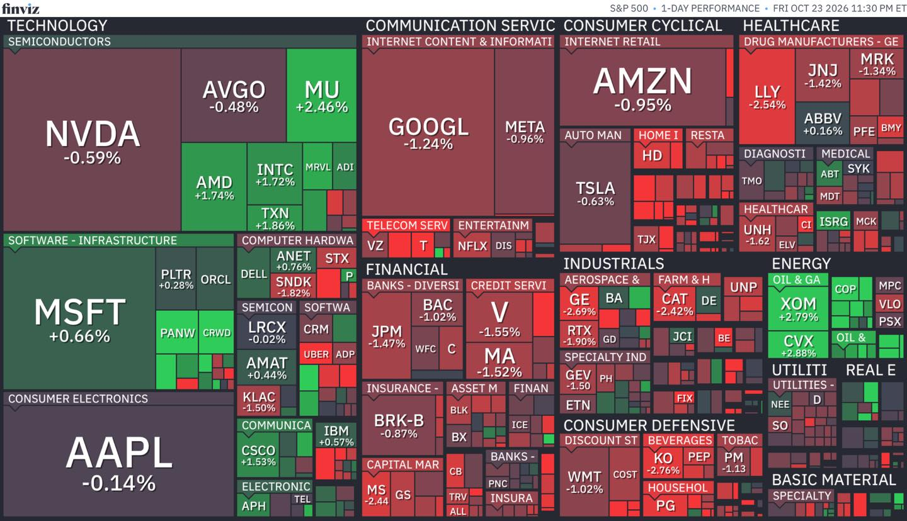

2026年10月25日 星期日（週末更新）
🛑 週末休市 數據沿用週五（10/23）收市：費半 10,779.46（+0.44%止血）· 納指 25,955.34（-0.21%）· 標普 7,623.68（-0.52%）· 道指 52,215.16（-1.23%補跌）｜DELL 456.44（+0.77%、日內低449.72＝未實穿448）｜10年（期貨）4.99%（+3.5bp）貼5.0｜恒指 23,093.37（60分鐘bar、收復23,000）｜油 116.72（+3.1%創4月以來高＝美伊衝突升溫主導，舊版「回落」口徑作廢）· 金 4,010（-1.24%貼4,000）｜FOMC 10/27-28
📊 市場決議
10/23（五）止血日：費半10,779.46（+0.44%）斷二連跌、AMD 516.79（+1.74%）領漲反攻；道指52,215.16（-1.23%）補跌吐回獨秀幅、標普7,623.68（-0.52%）／納指25,955.34（-0.21%）溫和整理；Bloomberg Evening Briefing「Tech rout subsides」：一週劇烈波動後環球市況回穩、對AI回報嘅懷疑令資金泊債（flocking to bonds）＝避險配置結構性加碼；王董獨家讀位：呢輪賣壓同之前科技領跌唔同——防禦股（必需消費／公用／醫療）都開始獲利了結＝資金輪動近尾聲、市場或重視科技基本面（美運通裁5%因應AI＋Caterpillar-2%＋高盛-1%）
🎯 今日定調
「科技跌勢喘定、去尾聲唔係反轉」：費半僅+0.44%＝上週-15.7%元氣未復；資金換位已發生——避險錢泊債唔返場；油116.72創4月以來高（美伊衝突升溫）＝通脹衝擊重燃限制減息空間；法國商業活動收縮＋政府債拋售、Moody's Aa3負面展望覆核在即＝歐洲主權風險新變數；SK Hynix抽起Solidigm $100億IPO＝AI泡沫焦慮由二級蔓延至一級；週末休市、FOMC 10/27-28前倉位防守照舊
⚖️ 風險天平
偏多：DELL 456.44（+0.77%）日內低449.72＝448止蝕線守得住、AMD+1.74%、DDOG+4.62%、恒指23,093收復23,000、費半+0.44%、CSI300尾市倒升（國家隊ETF放量＋橋水中國「審慎樂觀」）｜偏空：道指-1.23%補跌、10年4.99%（+3.5bp）仍貼5.0、金4,010四連跌貼4,000、油116.72（+3.1%）創4月以來高＝通脹衝擊重燃、CRWV 54.24（-2.46%）再創段底、Solidigm $100億IPO抽起｜中性：VIX 19.45（+2.21%）19.0-19.5徘徊、BTC 80,481（10/25即時、-0.73%）、日圓156.81
💹 市場定價
道指52,215.16（-1.23%）｜標普7,623.68（-0.52%）｜納指25,955.34（-0.21%）｜費半10,779.46（+0.44%）
布蘭特116.72（+3.1%、創4月以來高＝美伊衝突升溫、通脹衝擊重燃）｜期金4,010（-1.24%、四連跌貼4,000）｜10年4.99%（10/23期貨、+3.5bp貼5.0）＋2年4.65%（10/22官方）
美元101.81（+0.20%）｜日圓156.81（10/24 bar）｜比特幣80,481（10/25即時、-0.73%）｜VIX 19.45（+2.21%）
📝 一句話
「科技股止血但資金已換位：費半+0.44%喘定、避險錢泊債唔走（Bloomberg：AI回報懷疑令資金flocking to bonds）；DELL 456.44日內449.72＝448守得住、聽日（10/26）監察繼續；金4,010貼4,000＝掛鉤止蝕紀律執行中；FOMC 10/27-28前短存鎖息照即刻做」
🔴 恒指23,093.37（+0.69%、60分鐘bar核實）收復23,000但未收復23,800：全週23,800→22,934→23,093＝反彈初段確認不足；CSI300週四入熊後週五尾市倒升——國家隊ETF成交放量＋橋水中國「審慎樂觀」（Bloomberg）＝政策底訊號初現——聽日（10/26）23,000企穩先算止血、收復23,800先重開指數掛鉤；匯豐142.50（-1.04%）距140第四注線約1.8%＝到價先行、執行前核對。
🟡 DELL 456.44（+0.77%）日內低449.72＝貼448而未實穿：較入場462.5賬面-1.31%（前日-2.07%收窄）、DLLL 22.53（+1.35%）較入場26.7達-15.62%——止蝕警報暫解除但唔等於安全：聽日（10/26）21:30開市監察、日內實破448照執行減半＋即時Telegram通知；DLLL唔攤薄、2x槓桿結構唔再新開。
🟡 金4,010（-1.24%）四連跌貼4,000 vs 油116.72（+3.1%）創4月以來高：金由4,151→4,010＝流動性擠壓特徵持續、避險資金揀債唔揀金（Bloomberg同日gold fell＋長端收益率回落吸引）；油美伊衝突升溫再大漲＝高通脹＋限制減息空間、滯脹壓力回升（王董）——金掛鉤第三注條件失效照唔加、4,000失守定義轉弱加深；油掛鉤兩邊唔追（116以上先重估，唔追高）；FOMC前商品倉位減槓桿。
🟡 歐洲主權風險新變數——法債拋售＋Moody's覆核：法國商業活動收縮＋財政憂慮推冧政府債、下週Moody's Aa3負面展望覆核或加劇壓力（Bloomberg Intelligence）＋SK Hynix抽起Solidigm $100億IPO＝AI泡沫焦慮蔓延一級——環球債（U45838）新注停照舊；法巴新興債（U45817）揀倉避歐洲主權重災敞口；10年期貨4.99%貼5.0＝避險定價未逆轉。
恒生指數
23,093.37
▲ +0.69%（10/23收；60分鐘bar核實、收復23,000）
道瓊斯
52,215.16
▼ -1.23%（10/23收；補跌吐回獨秀幅）
S&P 500
7,623.68
▼ -0.52%（10/23收；溫和整理）
納斯達克
25,955.34
▼ -0.21%（10/23收；科技跌勢喘定）
費城半導體
10,779.46
▲ +0.44%（10/23收；AMD +1.74%領漲止血）
布蘭特原油
116.72
▲ +3.1%（10/23收；創4月以來高、通脹衝擊重燃）
黃金（期金）
$4,010
▼ -1.24%（10/23結算；四連跌貼4,000）
美10年債息
4.99%
▲ +3.5bp（10/23期貨；貼5.0＝U45838新注停）
美2年債息
4.65%
▼ —（10/22官方；期貨4.75無10-23結算bar）
美元指數
101.81
▲ +0.20%（10/23收；避險美元微升）
📡 週末核實（10/25 06:41-06:52 HKT）——美股＝10/23（五）收市（Yahoo日線bar逐一核實：道指-1.23%、標普-0.52%、納指-0.21%、費半+0.44%）；恒指指數日線滯後缺10-23 bar＝改用60分鐘bar核實＝16:00收23,093.37（+0.69%）；港股個股＝10/23收市（日線bar已出、全數核實）；商品/匯率＝10-23日線：金4,010（-1.24%）、布蘭特116.72（+3.1%、前月合約10-23結算bar＝實測與王董獨立引用一致；舊11月合約口徑111.66作廢）、美元101.81（+0.20%）、VIX 19.45；日圓156.81（10-24 bar、週末凍結）；BTC 80,481（10/25 06:42即時、較10/23收81,074 -0.73%）；2年期貨4.75（10-22收、10-23無結算bar＝以官方4.65%標註）｜官方曲線10/22（美國財政部10/23晨已公佈、10/25週日未更新）：1個月4.11%、3個月4.22%、6個月4.29%、1年4.41%、2年4.65%、3年4.72%、5年4.78%、7年4.86%、10年4.96%、20年5.32%、30年5.29%、2s10s 31bp｜EFFR 3.88%（NY Fed 10/21）｜前月聯邦基金期貨10/23收96.10＝隱含約3.90%｜美股收市個股（10/23）：DELL 456.44（+0.77%、日內低449.72）、DLLL 22.53（+1.35%）、META 642.62（-0.96%）、NVDA 210.96（-0.59%）、AMD 516.79（+1.74%）、CRWV 54.24（-2.46%）、ADBE 263.82（-2.49%）、DDOG 269.65（+4.62%）｜港股收市（10/23）：匯豐142.50（-1.04%）、騰訊386.00（+0.94%）、阿里97.80（+0.46%）、小米26.80（+3.88%）、美團71.65（+0.49%）、中海油23.12（-1.03%）、中銀香港5.95（-0.58%）、黃金ETF 2840 2,936（10/22收）｜王董大盤籌碼＝10/24 11:30 post已納入（10/23美股recap）＋Finviz heatmap已嵌入（10/23收市）
📊 聯儲局利率路徑定價（焦點：FOMC 10/27-28下週二三——前月聯邦基金期貨10/23收96.10＝隱含約3.90%＝hold主流定價不變；10年（期貨）4.99%貼5.0；避險資金泊債；油116.72創4月以來高＝通脹風險限制減息空間）
減息維持不變加息
現行利率3.75%-4.00%（EFFR 3.88%、NY Fed 10/21）；前月聯邦基金期貨10/23收96.10＝隱含約3.90%（對EFFR +2bp）＝10月hold主流、12月加息尾部淡化；Bloomberg：AI回報懷疑令資金泊債；油116.72創4月高＝通脹風險為減息添阻（王董）＝hold定價更穩、FOMC前短端照企
官方曲線10/22（10/25週日財政部未更新）：1個月4.11%、3個月4.22%、6個月4.29%、1年4.41%、2年4.65%、3年4.72%、5年4.78%、7年4.86%、10年4.96%、20年5.32%、30年5.29%；2s10s 31bp（官方）／約24bp（10/23期貨口徑4.99% vs 4.75%）。10年路徑：5.15→4.96（10/22官方、-17bp）→4.99（10/23期貨、+3.5bp企穩）＝避險買債後首日回穩；2年期貨4.75（10-22收、10-23無結算bar）＝以官方4.65%為準。
🗣 最新市況解讀（10/25（日）週末更新 · 美股＝10/23（五）收市；港股＝10/23收市（60分鐘bar核實）；金/油/匯＝10/23收市、日圓＝10/24 bar、BTC＝10/25即時 · Bloomberg 10/23 Evening Briefing「Tech rout subsides」＋王董大盤籌碼10/24 11:30 post（10/23美股recap，附Finviz heatmap）已融入 · FB解密系列今日暫缺）

Finviz S&P 500 板塊熱力圖（10/23收市）
【Macro】全球大盤與宏觀環境
- 10/23（五）止血日——科技跌勢喘定、資金結構換位：費半10,779.46（+0.44%）斷二連跌（AMD 516.79 +1.74%領漲）、納指25,955.34（-0.21%）、標普7,623.68（-0.52%）、道指52,215.16（-1.23%）補跌吐回獨秀幅——Bloomberg Evening Briefing定調「Calm Returns」：一週劇烈波動後環球市況回穩，投資者對AI最終回報嘅懷疑令部分資金「hedge their bets by flocking to bonds」——王董獨家讀位：賣壓集中必需消費／公用／醫療等防禦股獲利了結（美運通裁5%因應AI、Caterpillar-2%、高盛-1%）＝資金輪動近尾聲，市場或重新檢視科技基本面——覆核點：費半10,800可否收復、VIX 19.45會否返20以下、FOMC前有冇新一輪去槓桿。
- 10年期貨4.99%（+3.5bp）貼5.0＝避險買債暫告段落：10/22官方4.96%（-17bp）一次性大回落後、10/23期貨4.99%微彈企穩——路徑5.15→4.96→4.99：避險定價未逆轉、只係喘定；2s10s（期貨口徑）約24bp——U45838新注停照舊、等聽日（10/26）官方曲線更新先再計；2年官方4.65%＝短存鎖息窗口照收窄、即刻做。
- 恒指23,093.37（+0.69%、60分鐘bar核實）收復23,000：CSI300週四入熊後週五尾市倒升——國家隊偏愛嘅ETF成交放量＋橋水中國稱對本地股票「審慎樂觀」（Bloomberg）＝政策底訊號初現；但全週由23,800跌到22,934再彈23,093＝收復唔等於企穩——23,000攻防聽日（10/26）續、收復23,800先重開指數掛鉤；匯豐142.50（-1.04%）第四注140以下照計劃。
- 金油背馳——油116.72（+3.1%）創4月以來高 vs 金4,010（-1.24%）四連跌：油＝美國與以色列或重新規劃對伊朗軍事行動、伊朗備戰反擊，中東風險推布蘭特一晚+3.1%＝高通脹＋企業成本上升＋限制減息空間、滯脹壓力回升；油價高企已打入零售——富國銀行：Q3柴油價格年增約60%、折扣零售商利潤率衝擊由18bp擴至27bp、EPS負面影響倍增至6.2%（王董）；金續跌貼4,000＝流動性擠壓特徵未除（避險資金揀債唔揀金、Bloomberg同日gold fell）——FOMC前商品倉位減槓桿照舊：金第三注條件失效唔加、4,000失守定義轉弱加深；油掛鉤兩邊唔追、116以上先重估。
- 匯市與BTC——risk-off讀數降溫未逆轉：日圓156.81（10/24 bar）156-157徘徊＝套息平倉暫停但未完全散；美元101.81（+0.20%）微升；BTC 80,481（10/25即時、較10/23收-0.73%）周末陰跌＝風險偏好未修復——日圓若再破157＝risk-off重燃監察線；BTC結構續避開。
【Sector】關鍵板塊動態
- 費半+0.44%止血但趨勢未反轉：AMD 516.79（+1.74%）收復部份-8.10%失地、Micron漲近3%、Microsoft小幅上漲（王董）、NVDA 210.96（-0.59%）弱反彈——上週八日-15.7%、10/22單日-6.73%後僅+0.44%＝報復式反彈唔成立；王董基本面角度：近期公布財報嘅科技企業獲利仍強勁、跌市部分來自情緒恐慌而非獲利根本轉變；Julius Baer亞洲研究主管Mark Matthews（Bloomberg TV）：「半導體大修正係買入良機、需求仍遠超供應」＝聰明錢同樣分裂——芯片掛鉤停手紀律照行、收復10,800＋企穩先重新計。
- 領漲結構重排——AI降溫後非AI接棒（王董獨家數據）：截至本週四，S&P500非AI指數今年累計+12.4%已超越S&P500本身約12%；單計10月非AI指數+6.6%、S&P500卻跌約0.4%——能源與必需消費10月漲幅均超10%、資訊科技與通訊服務分別跌逾5%＝AI投資熱潮降溫後市場領漲結構正在重調——組合照「非AI收息＋防禦」傾斜；科技反彈當中先分「獲利支撐」定「情緒修復」。
- AI泡沫焦慮蔓延至一級市場——SK Hynix抽起Solidigm $100億IPO：監管與股東反對下放棄美國上市（Bloomberg）＝AI上市潮凍結多一單；對沖基金10/22（四）經歷疫情以來最慘烈之一日——三大股票策略齊跌逾1%（Goldman PB數據：基本面多空-1.4%、TMT基金平均-2.7%、系統化-1.3%、多策略-1.9%）＝去槓桿後首日回穩但未完——一級凍結＋基金去槓桿＝AI敘事兩端受壓：唔好喺槓桿位加注。
- 法國財政危機升溫：商業活動收縮＋政府債拋售、當局週末加派兩成警力防騷亂重演；Moody's Aa3負面展望覆核在即、BI警告債市壓力或加劇——歐洲主權風險＝環球債配置新變數：U45838內部歐洲主權敞口留意、新注停照舊。
- 消費與中國敞口——Volvo裁2,500職、股價插30%創新低：CEO明言西方車喺中國市場「快速消失」；Hermès／Cartier等奢侈品內地跌幅擴大＝有錢人消費回購衝擊最韌品牌（Bloomberg）——中國消費下行由車市蔓延至奢侈品：U45722亞太倉揀市場避內需重災、中海油23.12（-1.03%）油價大漲下照弱＝板塊情緒主導唔跟油價。
- 港股個股反彈分化：小米26.80（+3.88%）領漲、騰訊386.00（+0.94%）／阿里97.80（+0.46%）／美團71.65（+0.49%）溫和修復、匯豐142.50（-1.04%）／中海油23.12（-1.03%）逆市跌——匯豐距140第四注線約1.8%＝觸發線紀律錨照行；小米反彈離25.5觸發線遠咗、計劃掛住唔追。
【Company】關鍵個股與事件
- 持倉風控——DELL 456.44（+0.77%）／DLLL 22.53（+1.35%）：448止蝕線守得住（日內低449.72）。DELL較入場462.5賬面-1.31%（前日-2.07%收窄）、DLLL較入場26.7達-15.62%——止蝕警報暫解除、唔等於安全：聽日（10/26）21:30開市監察、日內實破448＝執行減半＋即時Telegram通知；DLLL唔攤薄、2x槓桿結構唔再新開。
- 持倉——ADBE 263.82（-2.49%）／DDOG 269.65（+4.62%）＝軟件分化反轉：前日+6.07%嘅ADBE回吐（較入場242.71仍+8.70%、止蝕240保本線以上）、前日-5.62%嘅DDOG反彈+4.62%（較入場267.94轉+0.64%微賺）——同一板塊輪流坐莊＝無趨勢市特徵——止蝕紀律照跟、唔因單日反彈改倉位計劃。
- CRWV 54.24（-2.46%）再創段底＝清算結構未修復：56→55.60→54.24、債YTM 15%+未實質回落——AI融資股照避、唔接腰斬股反彈；Blackstone Schwarzman重提十年前與馬雲巴士偶遇催生$2,000億數據中心帝國（Bloomberg）＝聰明錢長線照all-in AI、與二級市場短線恐慌形成時序差——「賣鏟人＋現金牛」長線邏輯與短線流動性係兩回事：倉位跟紀律唔跟敘事。
- AI融資結構兩案例——Oracle借錢藝術 vs CRWV降目標價（王董）：高盛報告：Oracle 2027財年融資架構＝約$200億股權發行（已完成）＋$200-250億客戶預付款（Q1已取約$110億）＋約$200億債務（2027下半年發行）、維持買進目標206（vs 125.54收市＝+64%潛在空間）——AI產業最大挑戰已唔係訂單增速、係大規模capex下資產負債表與現金流健康管理；大摩將CoreWeave目標價99→70（維持中立）——執行力出色但融資不確定性拖累8GW容量能見度、CDS利差擴至財困水平——AI基建競爭由「比算力」轉向「比融資成本與現金流」：U45816篩選尺加一條「自籌資金能力」。
- 美國運通裁減全球約5%員工因應AI變革、股價跌逾3%：Caterpillar-2%、高盛-1%＝防禦與價值股都進入獲利了結名單（王董）——藍籌裁員＝AI對就業結構衝擊由科技蔓延至金融——消費金融板塊讀數留意：裁員省成本短期撐EPS、但削弱消費承受力中線利淡。
- Apple摺疊iPhone Duo上市即缺貨：$2,000+定價需求強勁、供應鏈考驗（Bloomberg）＝消費電子高端需求韌性讀數——U45816內部「有定價權現金牛」篩選尺適用：業績溢價屬於有真需求嘅公司。
- 下週事件窗：FOMC 10/27-28＋Moody's法國主權覆核＋Citi獲中國證券牌照（五年等待終批、Bloomberg明日版跟進）——事件密度高：新倉位照一等再等、年期短緩衝闊槓桿零、到觸發線先行動。
【Sentiment】市場情緒
- VIX 19.45（+2.21%）19.0-19.5徘徊：風險逆轉後情緒降溫但未回穩、20整數關仍係心理閘——VIX<20＋10年<5.0並存＝「股市喘定、債市避險」組合持續：所有新倉位年期短、緩衝闊、槓桿零。
- 對沖基金去槓桿讀數（Goldman PB／Bloomberg）：10/22三大策略齊跌逾1%＝疫情以來最差之一日、TMT基金平均-2.7%——去槓桿後第二日市況回穩＝強制拋售暫停、但淨淡倉近五年高未拆——兩邊燃料照舊：唔估頂估底、唔加槓桿；分注紀律係唯一防線。
- 一級市場凍結加深：Solidigm $100億IPO抽起＋全等Anthropic上市（Iconiq／Spark／GIC帳面數十億收益）——IPO窗口重開無期＝AI敘事少咗變現出口——一級二級聯動風險留意：AI持倉當中「靠上市套現」故事嘅公司折讓最深。
- 資金流三句講完：股→債（避險買盤撐長端、Bloomberg「flocking to bonds」）＋油116.72創4月高（中東風險）vs 金四連跌＋美元微升＝risk-off降溫未逆轉；王董框架：AI融資競爭已由「比算力」轉向「比融資成本與現金流」、資金輪動近尾聲——「有盈利現金牛」篩選尺照用：現金與短存係最貴選擇權、下週FOMC前照持有。
【Micro 金價】
- 路徑：4,151.30（10/21結算）→4,060.40→4,044.20→4,010（10/23結算、-1.24%）＝四連跌、貼4,000整數關；2840.HK 2,936（10/22收）。
- 驅動：Bloomberg同日記「gold fell」——避險資金續揀債唔揀金（長端收益率回落吸引）＋補倉賣金＝流動性擠壓特徵持續；油回落令通脹對沖需求降溫。
- 技術面：4,000整數關攻防＝轉弱程度定義線；收復4,100先撤止蝕警報。
- 操作：金掛鉤第三注4,100-4,120條件已失效＝唔加；止蝕紀律執行、FOMC前唔博反彈；金油對沖組合兩邊都唔追。
📌 總結
- 定調——「科技喘定、資金換位」：費半+0.44%止血＋VIX 19.45＝恐慌峰值暫過；但Bloomberg「flocking to bonds」＝避險配置已結構性加碼——配置照「防禦優先」：現金＋短存＋收息泊位、指數與芯片掛鉤停。
- 恒指23,093.37收復23,000＝第一關過：CSI300尾市倒升＋國家隊ETF放量＋橋水中國「審慎樂觀」＝政策底訊號初現——聽日（10/26）企穩23,000、收復23,800先重開指數掛鉤；匯豐第四注140以下照計劃（現價142.50距約1.8%）、執行前核對。
- DELL 456.44日內低449.72＝448守得住：止蝕警報暫解除——聽日（10/26）21:30開市監察、實破448執行減半＋即時Telegram通知；DLLL 22.53（-15.62%）唔攤薄；2x槓桿結構唔再新開。
- 10年（期貨）4.99%貼5.0＝避險買債喘定唔係逆轉：U45838新注全停照舊、等聽日（10/26）官方曲線先再計——2年4.65%＝1-3個月美元短存鎖息窗口實質收窄、即刻做。
- 金4,010四連跌貼4,000＝第三注唔加：止蝕紀律執行、4,000攻防定義轉弱程度——油116.72創4月高＝通脹衝擊重燃、限制減息空間（王董）、金油對沖兩邊都唔追。
- 王董輪動尾聲框架＝下週最大變數：防禦股獲利了結（必需消費／公用／醫療）＋非AI指數年內+12.4%跑贏＝市場或重回科技基本面——但FOMC 10/27-28前唔博提前轉向：等聽日（10/26）23,000企穩＋費半10,800收復兩訊號齊先重開掛鉤；一級凍結（Solidigm）＋CRWV降目標價＝AI融資弱環節照避。
- AI泡沫焦慮升溫至一級市場：Solidigm $100億IPO抽起＋對沖基金疫情級去槓桿＋CRWV 54.24續跌＝「AI融資結構」照係全場最弱環節——U45816內部「賣鏟人＋現金牛＋有定價權」嚴選、唔接刀。
- RM部署：鎖息→美元1-3個月短存＋HSBC超短債（U45242）即刻做＋安聯浮動息（U45707）；長端→法巴環球債券（U45838）新注停、等企穩；收息泊位→PIMCO收益II（U50021、約5.95%）＋宏利多元入息（U45660、約10.08%）；防禦位→施羅德靈活配置總回報（U45871、約6%月派、極端市況可轉持現金）＝FOMC週首選；港股→恒生高息股30（U45624、7.52%）等收復23,800先重開、匯豐個股第四注140以下照計劃；金→掛鉤止蝕執行、第三注唔加；日圓156.81／BTC 80,481結構續避開。
ℹ️ 來源：Bloomberg（10/23 Evening Briefing「Tech rout subsides」：全球市況回穩、AI回報懷疑令資金泊債（flocking to bonds）／SK Hynix抽起Solidigm $100億美股IPO（監管與股東反對）／對沖基金10/22疫情級去槓桿——三大策略齊跌逾1%、TMT基金平均-2.7%（Goldman PB）／法國商業活動收縮＋政府債拋售、Moody's Aa3負面展望覆核在即（BI：壓力或加劇）／CSI300尾市倒升——國家隊ETF成交放量＋橋水中國「審慎樂觀」／Volvo裁2,500職股價插30%創新低、Hermès／Cartier內地跌幅擴大／Apple摺疊iPhone Duo $2,000+上市即缺貨／Blackstone Schwarzman重提馬雲巴士偶遇＋$2,000億數據中心帝國／Julius Baer Matthews：半導體大修正係買入良機）＋Yahoo Finance實測（10/25 06:41-06:52 HKT：美股與港股個股＝10/23收市bar逐一核實；恒指指數日線滯後＝改用60分鐘bar核實16:00收23,093.37；金4,010／布蘭特116.72（+3.1%、前月合約結算bar與王董獨立引用一致）／美元101.81／VIX 19.45＝10-23日線、日圓156.81＝10-24 bar、BTC 80,481＝10/25即時（較10/23收81,074 -0.73%））＋美國財政部官方曲線（10/22；10/25週日未更新：2年4.65%、10年4.96%、20年5.32%、30年5.29%、2s10s 31bp）＋NY Fed EFFR 3.88%（10/21）＋前月聯邦基金期貨10/23收96.10＝隱含約3.90%（hold主流）＋FB解密系列：今日暫缺＋王董大盤籌碼（10/24 11:30 post、10/23美股recap：防禦股獲利了結＝資金輪動尾聲／S&P500非AI指數年內+12.4%跑贏、10月+6.6% vs 大盤-0.4%／美運通裁5%＋Caterpillar-2%＋高盛-1%／布蘭特+3.1%收116.72創4月高＝美伊衝突升溫、富國：柴油價格年增60%衝擊折扣零售EPS 6.2%／高盛：Oracle $200億股權＋$200-250億預付款＋$200億債務融資架構、目標206／大摩：CRWV目標價99→70、CDS擴至財困水平／Micron+3%、Microsoft微漲）＋Finviz heatmap（10/23收市、is_finviz=true已嵌入）。
📊 (1) 基金表格（18隻，RM銷售直接用）
| 基金 | 代號 | 分類 | 特性/派息 |
|---|
| HSBC貨幣 | U45193 | 現金 | 流動性極高，現金管理首選；FOMC前現金係最貴選擇權 |
| HSBC超短債 重點 | U45242 | 極短債 | 低利率風險；2年官方4.65%短端企穩——鎖息窗口實質收窄、即刻做 |
| 安聯浮動息 重點 | U45707 | 浮息債 | 息率隨市場調整；油116.72（+3.1%）創4月以來高＝通脹衝擊重燃、限制減息空間（王董）——浮息對沖價值上升 |
| PIMCO收益II 重點 | U50021 | 核心收息 | 月派息約5.95%；收息泊位首選 |
| 法巴環球債券 新注停 | U45838 | 核心收息 | 環球投資級債；10年（期貨）4.99%（+3.5bp）貼5.0＝避險買債喘定未逆轉——新注全停、等聽日（10/26）官方曲線企穩再計、每注執行前核對官方讀數 |
| 法巴新興債 | U45817 | 核心收息 | 新興市場高息；中股政策底訊號初現（國家隊ETF放量）但法債拋售＋Moody's法國覆核＝主權風險分化——國別篩選收緊、避歐洲主權重災敞口 |
| 東方匯理收益機遇 | U45769 | 多元資產 | A2美元月派息，年率化約8.2% |
| 宏利多元入息10%派 重點 | U45660 | 多元資產 | 年化派息約10.08%，收息客首選 |
| 普徠仕多元收益 | U45679 | 多元資產 | 多元收益來源，分散風險 |
| PIMCO收益增長 | U45553 | 多元資產 | 收益＋增長並重 |
| 恒生亞洲增長收益 | U45090 | 多元資產 | 聚焦亞洲，月派息約5.73%；恒指23,093.37收復23,000＝停注等企穩；日圓156.81套息平倉暫停＝亞洲匯市波動留意 |
| 施羅德靈活配置總回報 本週首選 | U45871 | 多元資產 | 月派約6%；無基準限制靈活股債現金配置（Cash+3%絕對回報導向），極端市況可大幅轉持現金——科技喘定但FOMC 10/27-28逼近＝本週首選防禦位 |
| 施羅德環球股債增長收息 | U45883 | 多元資產 | 月派約7.68%；環球股票32.8%＋環球債33.5%＋可換股債31.8%，存續期僅1.7年——短存續喺避險買債環境下優勢持續 |
| 恒生高息股30 ETF | U45624 | 股票主題 | 派息率約7.52%；恒指23,093.37（10/23收、+0.69%）收復23,000——指數掛鉤與加注全停＝收復23,800＋企穩先重開；匯豐個股計劃照行 |
| 貝萊德系統分析高息股 | U44950 | 股票主題 | 派息率約8-10%＋期權增強；重倉港股騰訊+0.94%／阿里+0.46%溫和修復＝倉位壓力暫緩——下週FOMC＋Moody's法國覆核＝板塊讀數 |
| 鄧普頓亞太入息 | U45722 | 股票主題 | 亞太區入息策略；中股政策底訊號＋Volvo式內需潰退（奢侈品同步轉弱）——區內資金流重排、暫停加注、等FOMC落地 |
| 法巴科技創新 重點 | U45816 | 股票主題 | 科技創新主題；費半+0.44%喘定＋CRWV 54.24（-2.46%）再創段底＝清算結構未修復——內部照「賣鏟人＋現金牛＋有定價權」嚴選、唔接腰斬股反彈；CRWV債息回落先重新計 |
| 摩根亞洲股票高息 重點 | U45501 | 股票主題 | 月派約8.08%；重倉台/韓/中科技龍頭＋沽亞洲指數Call期權增強收益——恒指+0.69%修復＝台韓中倉位波動讀數改善；VIX 19.45高位期權金收入撐＝持有唔加 |
💡 RM切入：今日主題「科技喘定＝防禦減倉唔減級」（費半+0.44%止血、Bloomberg：避險錢泊債；王董：防禦股獲利了結＝輪動尾聲、非AI收息泊位中線邏輯唔變）→第一句講「美元短存＋HSBC超短債（U45242）即刻做＋安聯浮動息（U45707）」＝2年4.65%窗口實質收窄；10年4.99%貼5.0→法巴環球債券（U45838）新注停、等聽日（10/26）官方曲線；FOMC週→施羅德靈活配置總回報（U45871、約6%月派、可轉現金）＝本週首選防禦位；收息泊位續推PIMCO收益II（U50021、5.95%）與宏利多元入息（U45660、10.08%）；匯豐142.50＝第四注140以下照計劃＝「分注進出」紀律唔受市況影響；金掛鉤四連跌→止蝕執行、第三注唔加（4,250以上唔追原則不變）；EM客→政策底訊號＋法債危機＝U45817／U45722揀市場先睇「主權風險＋資金流去向」。
🎯 (2) ELN 表格
| 標的 | 邏輯 | 接貨機會 |
|---|
| 恒生指數ELN | 恒指23,093.37（10/23收、+0.69%）收復23,000但未收復23,800——聽日（10/26）企穩23,000＋收復23,800先重開；FOMC 10/27-28前＝年期一至兩週 | 低 |
| 黃金ETF（2840.HK） | 期金4,010（-1.24%）四連跌貼4,000＝流動性擠壓特徵持續——第三注唔加、止蝕紀律執行；4,000攻防定義轉弱程度；金油對沖兩邊唔追 | 低 |
| 費半／晶片相關 | 費半10,779.46（+0.44%）喘定但未收復10,800——掛鉤停手照舊；CRWV債息回落＋費半企穩兩條件齊先重新計；行權價緩衝25% OTM以上紀律不變 | 低 |
| 中國海洋石油（0883.HK） | 23.12（10/23收、-1.03%）、油116.72大漲但股價照弱＝板塊情緒主導——回調23以下先接、唔追油價 | 中 |
| 匯豐（0005.HK） 第四注等觸發 | 142.50（-1.04%）距140約1.8%＝第四注等140以下照計劃；下週FOMC＝板塊讀數 | 中 |
| 小米（1810.HK） 計劃掛住 | 26.80（+3.88%）反彈＝距25.5觸發線遠咗——計劃照掛、到價分注執行、唔猜底唔追 | 中 |
⚠️ 恒指收復23,000未收復23,800＋費半未收復10,800＋金貼4,000＋FOMC 10/27-28＋Moody's法國覆核＝風險疊加——所有掛鉤結構年期一律宜短不宜長（一至兩週）；芯片掛鉤停手；黃金掛鉤止蝕執行、第三注唔加；恒指／指數掛鉤等收復23,800；油掛鉤兩邊唔追；匯豐／小米個股觸發線到價先行；DELL監察448＝槓桿結構唔再新開。
💴 (3) MXI / 定存建議
美元定存：3個月期約 4.2-4.4厘，6個月期約 4.0-4.2厘（2年官方4.65%短端企穩——鎖息窗口實質收窄、即刻鎖、唔等FOMC 10/27-28）
港元定存：3個月期約 3.7-3.9厘
MXI結構性存款：掛鉤指數為主，潛在年化回報 5-7%（黃金掛鉤止蝕執行唔加注；指數掛鉤等恒指收復23,800；芯片掛鉤停手；油掛鉤兩邊唔追）
💡 建議：1-3個月美元短存即刻鎖息——2年4.65%＋FOMC前hold定價＝窗口實質收窄；長端——10年（期貨）4.99%貼5.0＝法巴環球債券（U45838）新注全停、等官方曲線企穩；黃金掛鉤四連跌＝止蝕執行、第三注唔加；港股——恒指收復23,000未收復23,800指數掛鉤照停、匯豐第四注140以下照計劃；DELL 456.44日內449.72未實穿448＝聽日（10/26）21:30監察、實破執行減半＋Telegram通知；下週關鍵：恒指23,000企穩確認＋費半10,800＋金4,000攻防＋CRWV債息＋Moody's法國覆核＋FOMC 10/27-28。
🔍 今日關注 Watchlist
DELL 456.44（+0.77%）：日內低449.72＝貼448未實穿、止蝕警報暫解除——聽日（10/26）21:30監察、實破448執行減半＋Telegram通知；DLLL 22.53唔攤薄｜
恒指23,093.37（+0.69%、60分鐘bar核實）收復23,000：CSI300倒升＋國家隊ETF放量＋橋水中國「審慎樂觀」——企穩23,000、收復23,800先重開指數掛鉤｜
費半10,779.46（+0.44%）止血：AMD +1.74%領漲——報復式反彈唔成立、收復10,800＋企穩先重新計、芯片掛鉤停手照舊｜
10年（期貨）4.99%（+3.5bp）貼5.0：避險買債喘定未逆轉——U45838新注停；2年4.65%＝短存即刻鎖｜
金4,010（-1.24%）四連跌貼4,000：流動性擠壓特徵持續——第三注唔加、止蝕紀律執行；4,000攻防｜
油116.72（+3.1%）創4月以來高：美伊衝突升溫＝通脹衝擊重燃、限制減息空間——油掛鉤兩邊唔追、116以上先重估｜
SK Hynix抽起Solidigm $100億IPO：AI泡沫焦慮蔓延至一級市場——IPO窗口凍結加深、AI敘事變現出口再收窄｜
對沖基金10/22疫情級去槓桿：三大策略齊跌逾1%、TMT平均-2.7%——淨淡倉五年高未拆、兩邊都易爆、唔加槓桿｜
法債拋售＋Moody's Aa3負面展望覆核在即：法國商業活動收縮——歐洲主權風險＝環球債新變數、U45838敞口留意｜
CRWV 54.24（-2.46%）再創段底：清算股唔反彈——債YTM 15%+未回落＝結構未修復、照避｜
匯豐142.50（-1.04%）距140約1.8%：第四注140以下照計劃——個股觸發線係紀律錨、到價先行｜
10/23港股收市：恒指23,093.37（60分鐘bar）｜0005.HK 142.50、0700.HK 386.00、0883.HK 23.12、3690.HK 71.65、9988.HK 97.80、1810.HK 26.80、3988.HK 5.95、2840.HK 2,936（10/22收）｜10/23美股：VIX 19.45｜日圓156.81（10/24 bar）、BTC 80,481（10/25即時）